Contents
Getting started
Pylon is a media player that uses VLC's engine to play your files, with a calmer interface and features made for watching shows. It plays everything VLC plays. You install VLC yourself, and Pylon finds it.
Install
Windows 10 and 11
- Install the 64-bit VLC from videolan.org.
- Download
Pylon-Setup-1.5.1.exefrom the download page and run it. No admin rights are needed. - If Windows says "Windows protected your PC", click More info, then Run anyway. Pylon isn't code-signed yet.
Linux
- Install VLC from your distribution's packages, for example
sudo apt install vlc. The Flatpak and Snap versions of VLC can't be used by other apps. - Download
Pylon-1.5.1-x86_64.AppImage, runchmod +x Pylon-*.AppImage, then double-click it. - The first start adds Pylon to your applications menu and "Open with".
macOS 14 and later
- Install VLC from videolan.org and drag it into Applications.
- Download
Pylon-1.5.1-macOS.zip, unzip it and move Pylon to Applications. - The first launch is blocked because Pylon isn't signed by Apple. Open System Settings > Privacy & Security and click Open Anyway.
Opening something to watch
- Drop files, folders or links anywhere on the Pylon window.
- Use Open file, Open folder or Network stream on the home screen, or the same choices under Menu > Open. Link from clipboard plays a link or file path you've copied.
- On Windows, right-click a file and choose Open with > Pylon. Opening another file while Pylon is running plays it in the same window.
- When you play a file, the rest of its folder goes into the queue in name order, so the next episode is ready.
.mkv, and choose Pylon.The home screen
Pylon opens on the home screen: what you were watching, what you played recently, your library folders, playlists, music and saved streams. Click any card to play it, or right-click it for more choices.
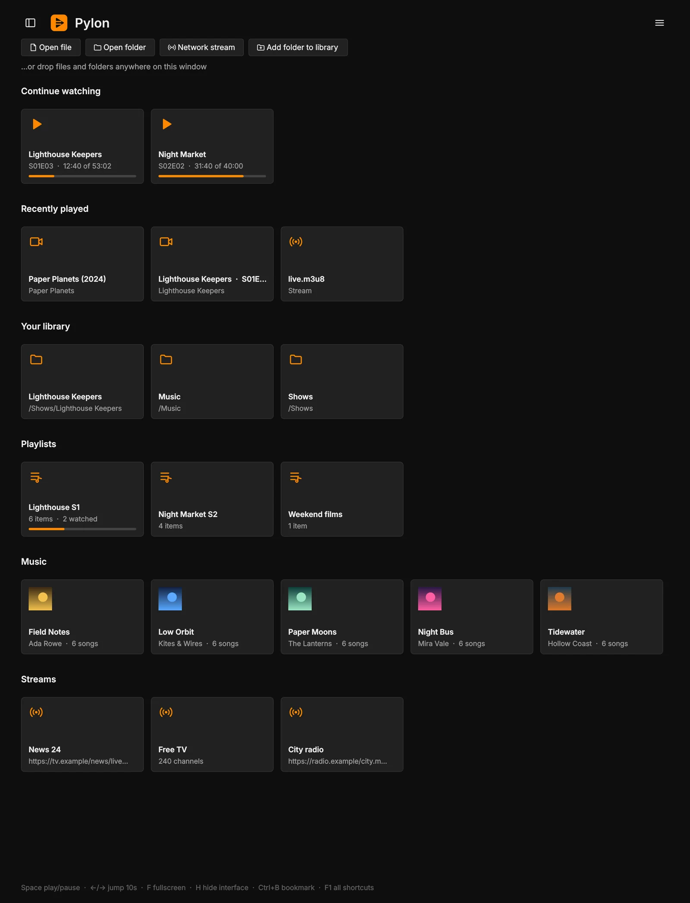
Click a number on the picture, or an item in the list, to see what it is.Tap an item in the list to light it up on the picture.
Arrange the home screen
Open Preferences > Interface and find Home screen sections.
- Drag a section by its handle (the dots on the left) to move it up or down.
- Click the eye next to a section to show or hide it. A crossed-out eye means hidden.
Hiding a section doesn't delete anything. Pinned playlists and streams come first in their sections.
The Music section starts with Continue listening: albums you were partway through, with a bar showing how far you got. Click one to carry on from the song you were on, or the next one if you finished it. A song that isn't on an album gets its own card. Hover a card and click × to remove it until you play it again. After that come your albums, pinned ones first, then the newest.
The player
While something plays, the top and bottom bars float over the picture. They appear when you move the mouse and fade away when you stop. Press H to hide them completely, or keep them on screen with Preferences > Interface > Keep the controls visible when not in fullscreen.
Click a number on the picture, or an item in the list, to see what it is.Tap an item in the list to light it up on the picture.
Mouse
- Click the video to play or pause, double-click for fullscreen, scroll to change the volume and right-click for the menu. You can change what each click does in Preferences > Controls, including the middle button and the back and forward buttons.
- Hover the seek bar to see a preview picture of that moment. Previews are made in the background the first time you play a video, and kept for next time. They work for files on your computer, not online streams.
Zoom into the picture
Hold Ctrl and scroll over the video to zoom in on the spot under the mouse, or use Ctrl+= and Ctrl+-. While zoomed, drag the picture to look around. Ctrl+0 resets the zoom.
Picture in picture
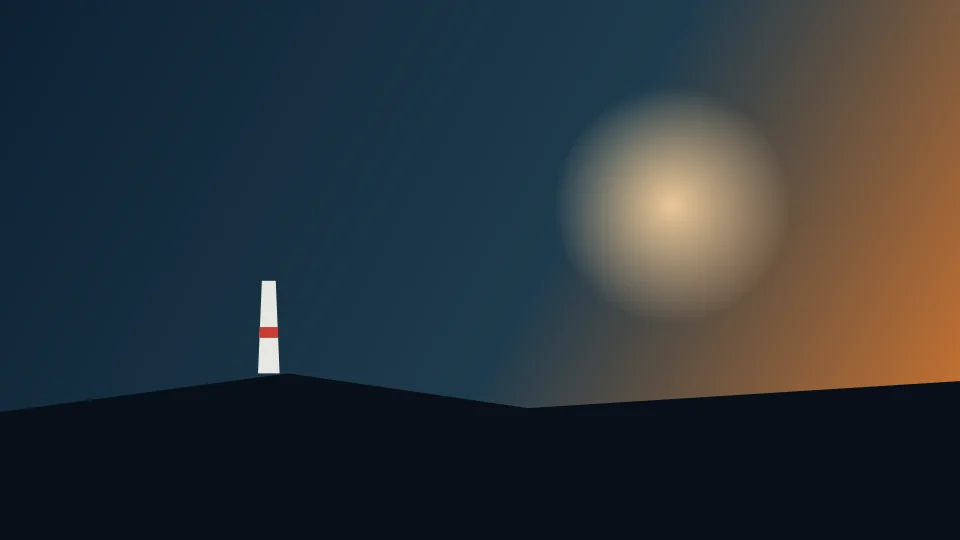
Click the picture-in-picture button in the top bar or press Ctrl+P. Pylon becomes a small borderless window that stays on top of your other apps.
Drag it anywhere, and drag its edges to resize it. Press Esc or the button again to go back.
The right-click menu
Right-click the video for the things you change most while watching: subtitle and audio tracks, the video track and aspect ratio, speed, bookmarks, snapshots, the panels, fullscreen and picture in picture.
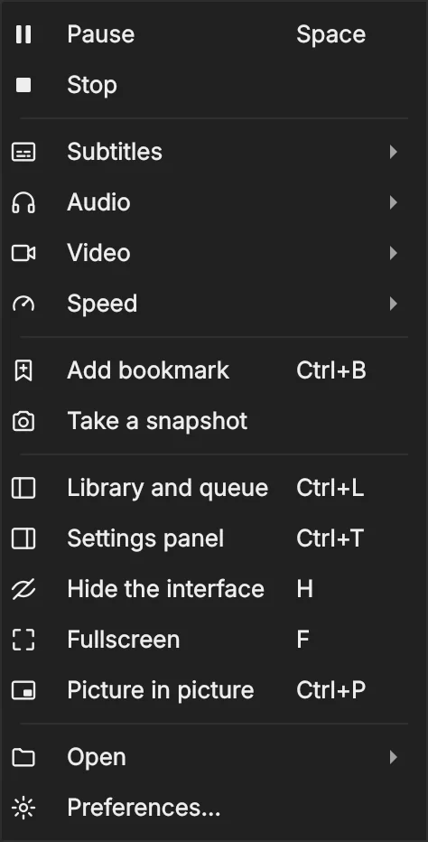
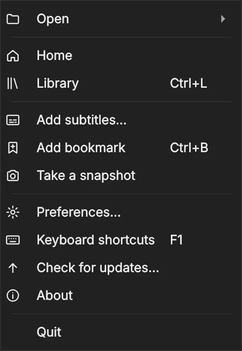
Snapshots
Press Shift+S, or choose Take a snapshot in the menu, to save the current picture. Snapshots go to Pictures\Pylon.
The library panel
The library panel opens on the left with Ctrl+L, the button at the top left, or by clicking the folder name in the top bar. The video keeps playing next to it. The top half has five tabs; the bottom half is the queue.
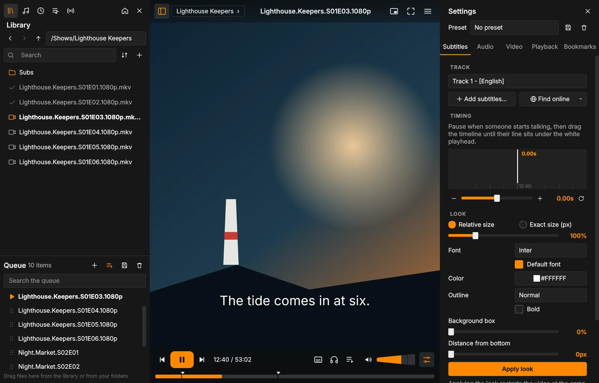
Click a number on the picture, or an item in the list, to see what it is.Tap an item in the list to light it up on the picture.
Ctrl+Shift+L shows or hides both side panels at once. Preferences > Interface lets you choose which tab each panel opens on.
Library tab
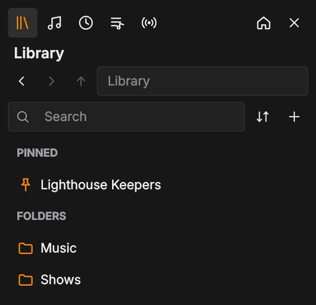
Your library folders, with pinned folders at the top. Double-click a folder to open it, and a file to play it with the rest of its folder queued.
- Use the + button, or Add folder to library on the home screen, to add a folder.
- Files you've watched have a tick. Sort by Unwatched first to see what's next.
- Select several files with Ctrl or Shift, and drag them into the queue.
- Right-click a file or folder for more:
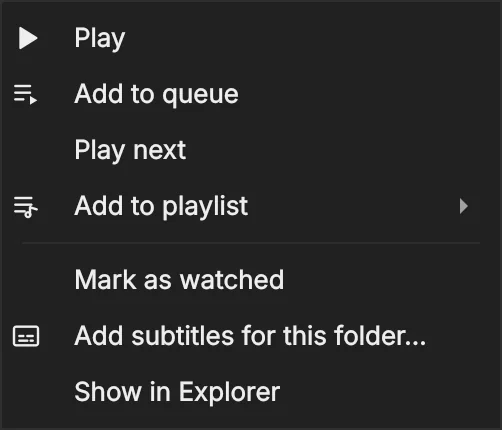
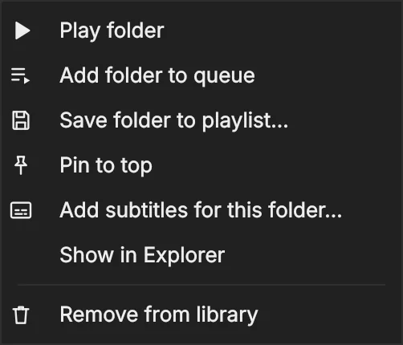
Music tab
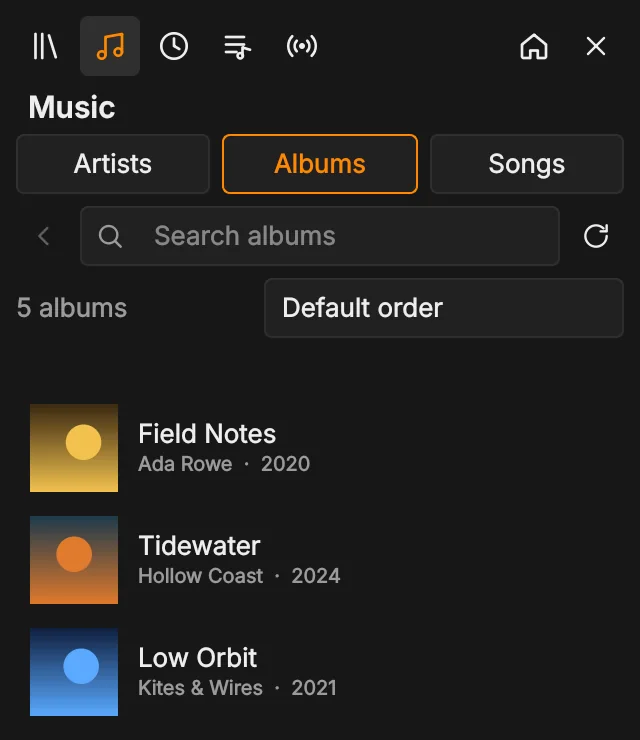
Songs from your library folders, with cover art from the files. Switch between Artists, Albums and Songs. Open an album and press Play, or double-click any song.
Pylon reads your music in the background. Click the circular arrow to look for new music. Right-click an artist or album to play it, queue it, add it to a playlist or Pin to top.
Recent tab
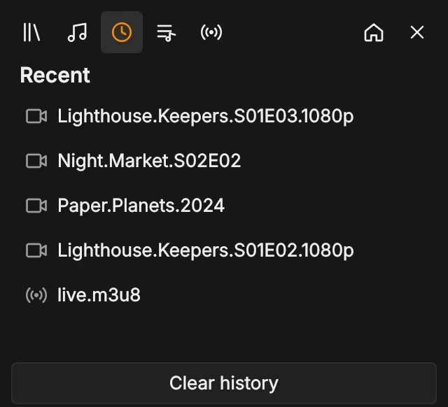
Playlists tab
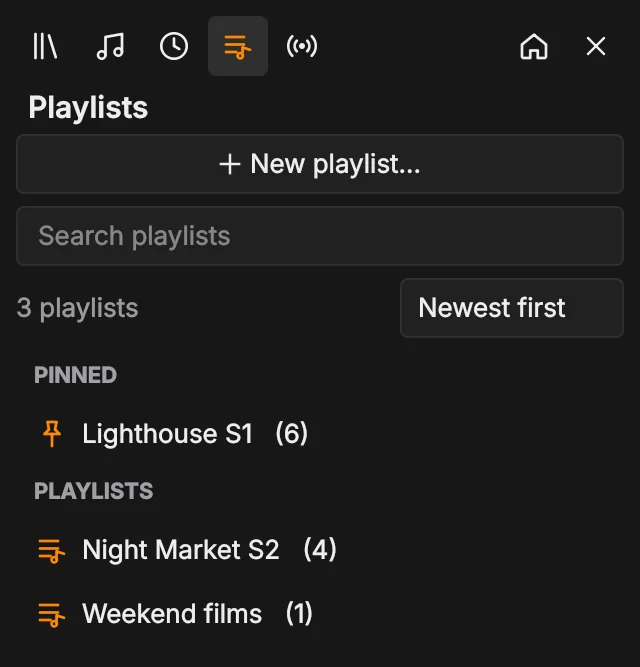
Click New playlist… to make one, or right-click files, folders, albums or the queue and choose Add to playlist. The number next to each name is how many items it has.
Playing a playlist continues from the first item you haven't finished. New episodes you add slot in next to the others from the same show, in name order. Right-click a playlist to play it, queue it, add files, sort it by name, rename it, export it as an .m3u file, pin it to the top or delete it. Deleting a playlist never deletes your files.
Streams tab
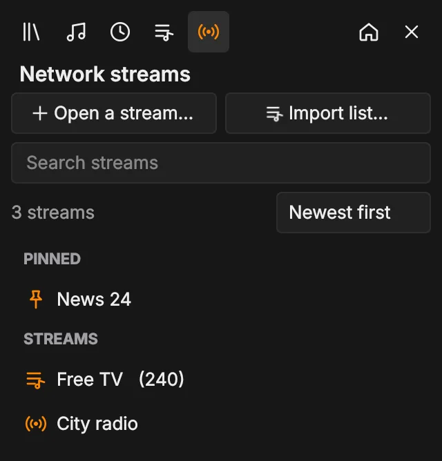
Pin to top
Right-click a library folder, stream, playlist, artist or album and choose Pin to top. Pinned items sit in their own group at the top of the tab whatever the sort order, and come first on the home screen. Choose Unpin to put an item back.
The queue
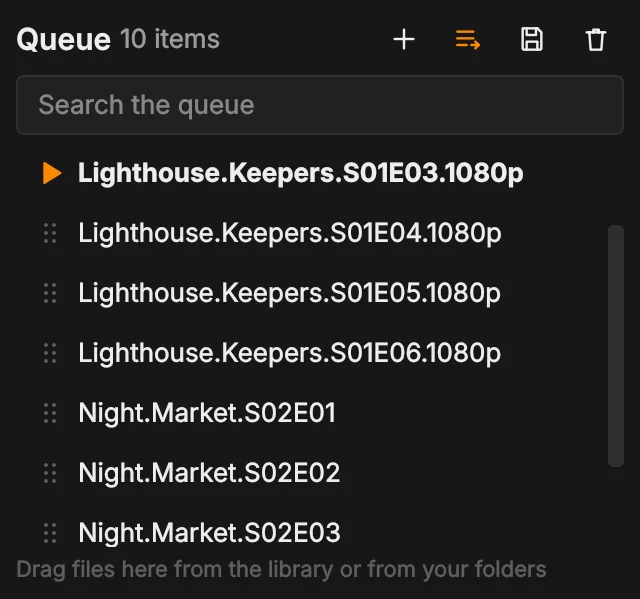
The queue is the list of what plays next, at the bottom of the library panel. Open it with Ctrl+Q or the queue button on the bottom bar.
- Double-click an item to play it. Drag items to reorder them.
- Drag files in from the library or from your file manager, or right-click a file anywhere and choose Add to queue or Play next.
- Select several items with Ctrl or Shift, then right-click to mark them watched or remove them, or press Delete.
- An episode you add joins the others from its show in name order. Right-click and choose Sort by name to put the whole queue in order.
- With more than 8 items, a search box appears above the queue.
Queue mode
The button above the queue decides what happens when an item ends. Click it to cycle through the modes:
| Mode | What happens when an item ends |
|---|---|
| Stop (grey button) | Playback stops. |
| Shuffle | The queue is mixed up (what's playing stays first) and plays in that order. Leaving Shuffle puts the original order back. |
| In order | The next item in the queue plays. This is the default. |
| Loop | The same item plays again. |
The same choice is in the settings panel under Playback, along with Start the queue again when it reaches the end, which repeats the whole queue, and works with Shuffle too. Preferences > Playback sets the mode Pylon starts in.
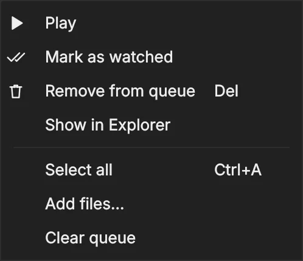
The settings panel
Press Ctrl+T or click the sliders button at the bottom right. The panel opens on the right, so you can adjust things while the video plays.
Presets: settings for a show
A preset keeps subtitle timing and look, audio and subtitle tracks, speed and picture settings for a show. Set things up once, then click the save button next to Preset and give it a name. Every file in that folder uses it automatically from then on. Pick another preset from the list, or No preset, at any time.
Subtitles tab
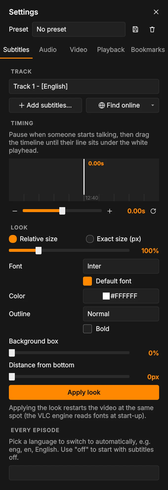
- Track: choose a subtitle track. Add subtitles… adds files; Find online opens a subtitle site in your browser.
- Timing: pause when someone starts talking, then drag the timeline until their line sits under the white playhead. The - and + buttons, the slider, and the G and J keys move subtitles 50 ms at a time.
- Look: size (relative or exact pixels), font, color, outline, bold, background box and distance from the bottom. Click Apply look. The video restarts at the same spot, because VLC reads these when it starts.
- Every episode: a language to switch to automatically, such as
engorEnglish. Useoffto start with subtitles off.
Pylon also finds subtitle files next to the video, or in a Subs or Subtitles folder, by itself. How closely names must match is set in Preferences > Subtitles.
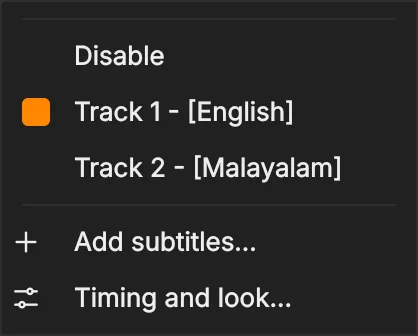
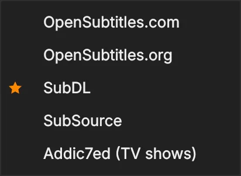
Add subtitles to a whole season
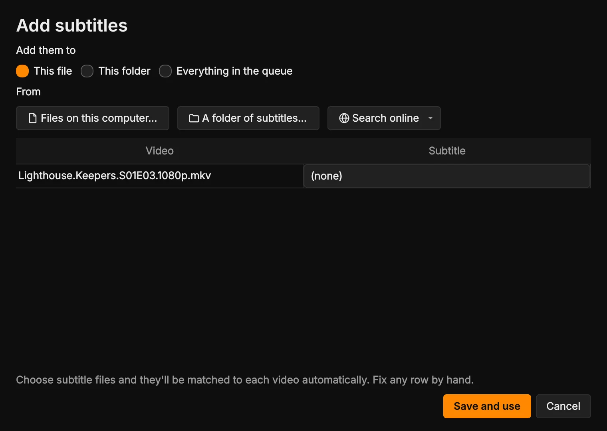
- Choose Add subtitles… in the Subtitles tab, the subtitles button or the menu.
- Pick where they go: This file, This folder or Everything in the queue.
- Choose Files on this computer… or A folder of subtitles…. Each subtitle file is matched to its video by name or episode number (S01E02, 1x02, E02).
- Fix any row by hand, then click Save and use. Pylon remembers the pairings.
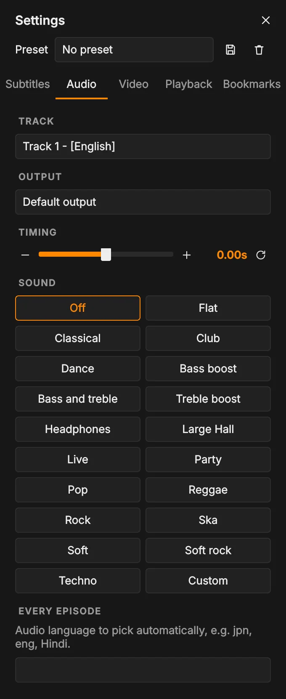
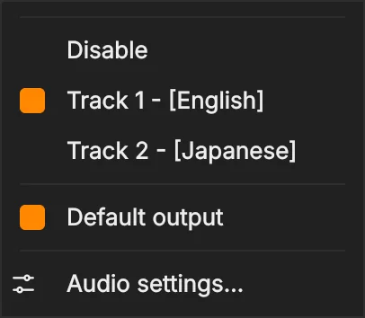
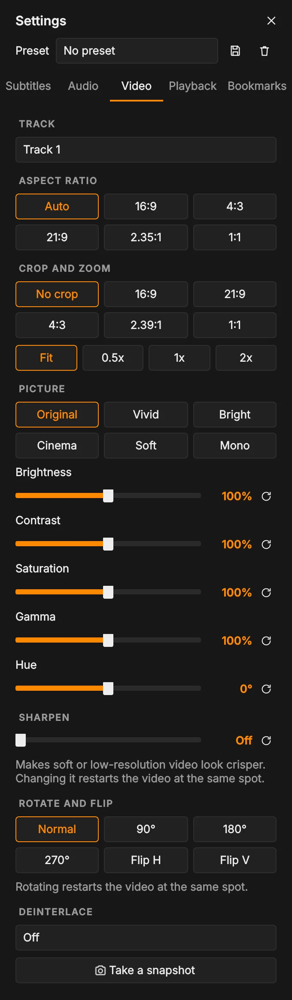
Audio tab
- Track and Output: the audio track, and where sound plays (speakers, headphones and so on).
- Timing: move the sound earlier or later if it doesn't match the picture. Keys: K later, Shift+K earlier.
- Sound: VLC's equalizer presets in one click. Hover a preset to see what it does. Custom opens a 10-band equalizer; double-click any slider to reset it to 0 dB, or click Flat to reset them all.
- Every episode: an audio language to pick automatically, such as
jpnoreng.
Video tab
- Aspect ratio, Crop and zoom: fix a stretched picture or remove black bars. A and C step through them.
- Picture: one-click looks (Original, Vivid, Bright, Cinema, Soft, Mono) and sliders for brightness, contrast, saturation, gamma and hue. Each slider's circular arrow resets it.
- Sharpen: makes soft or low-resolution video look crisper.
- Rotate and flip, and Deinterlace for old TV recordings with comb-like lines.
Changing sharpen or rotation restarts the video at the same spot.
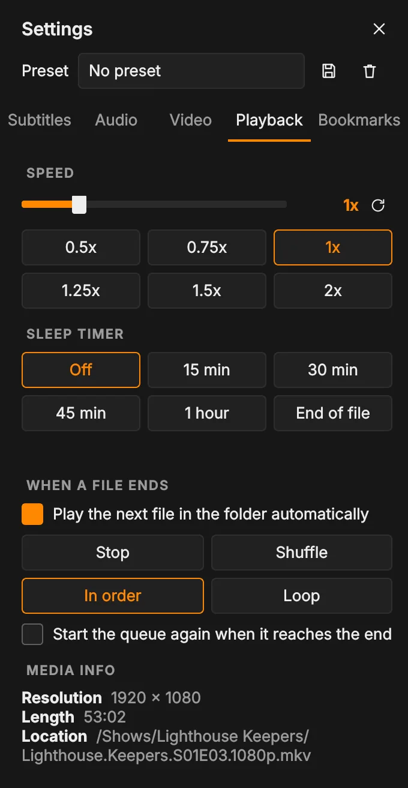
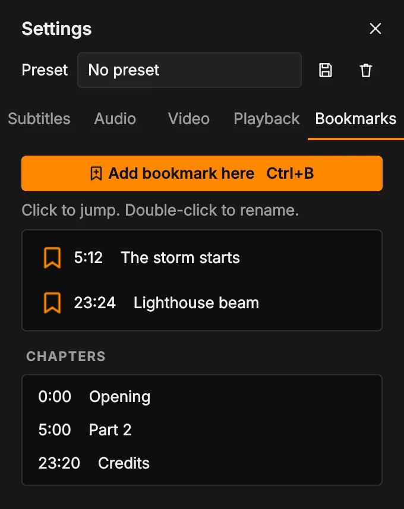
Playback tab
- Speed: from 0.5x to 2x.
- Sleep timer: stop after 15, 30 or 45 minutes, an hour, or at the end of this file.
- When a file ends: play the next file in the folder, the queue mode, and whether the queue starts again at the end.
- Media info: resolution, length and where the file is.
Bookmarks tab
Press Ctrl+B anywhere to bookmark the current moment. Bookmarks show as small triangles on the seek bar. In this tab, click one to jump to it and double-click to rename it. If the file has chapters, they're listed below, and they show as thin lines on the seek bar.
Preferences
Open Preferences with Ctrl+, or Menu > Preferences…. Each option has an info icon; hover it for a short explanation. Changes apply straight away.
General: colours and themes
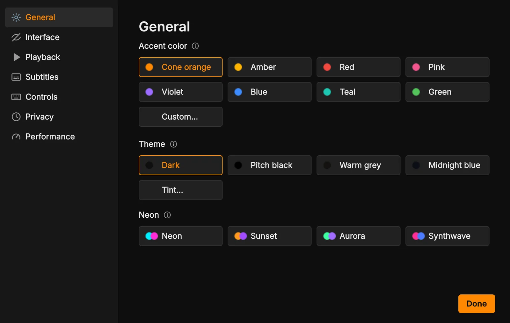
Pick an accent color for highlights, the seek bar and the volume, or Custom… for any colour. Pick a theme: Dark, Pitch black, Warm grey, Midnight blue, or Tint… for dark shades of any colour. The Neon themes (Neon, Sunset, Aurora, Synthwave) add glowing gradient highlights and use their own colours.
Interface
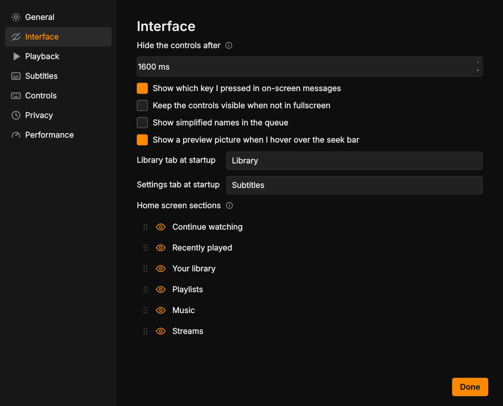
- Hide the controls after: how long the bars stay after the mouse stops.
- Show which key you pressed in on-screen messages, keep the controls visible in a window, show simplified names in the queue, and turn seek bar preview pictures on or off.
- Library tab at startup and Settings tab at startup: which tab each panel opens on, or the last one you used.
- Home screen sections: reorder and show or hide each home screen section.
Playback
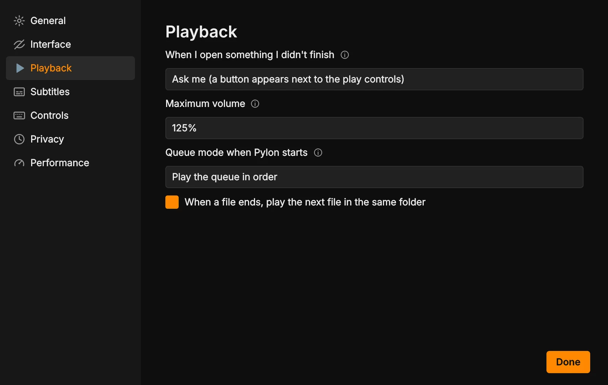
- When I open something I didn't finish: ask (the Continue from button), always continue, or always start from the beginning.
- Maximum volume: 125%, 150% or 200%. Above 100%, Pylon boosts quiet audio, like VLC. Very loud sound can distort.
- Queue mode when Pylon starts, and whether the next file in the folder plays when one ends.
Subtitles
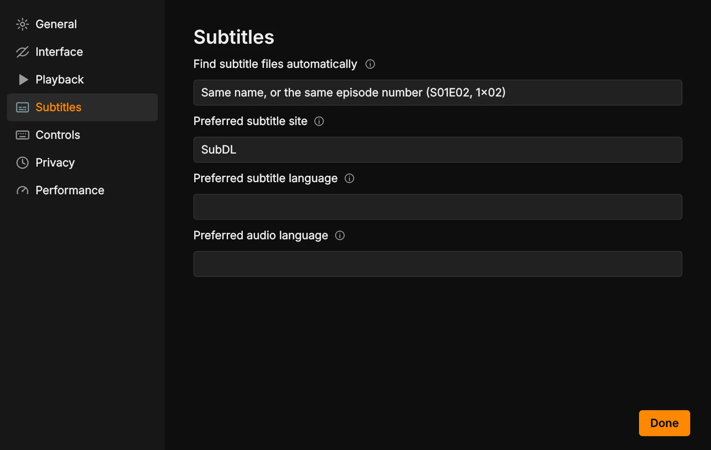
- Find subtitle files automatically: how closely a subtitle's name must match the video.
- Preferred subtitle site: marked with a star in the Find online menu. The menu always keeps the same order.
- Preferred subtitle language and Preferred audio language for every file, unless a preset says otherwise.
Controls
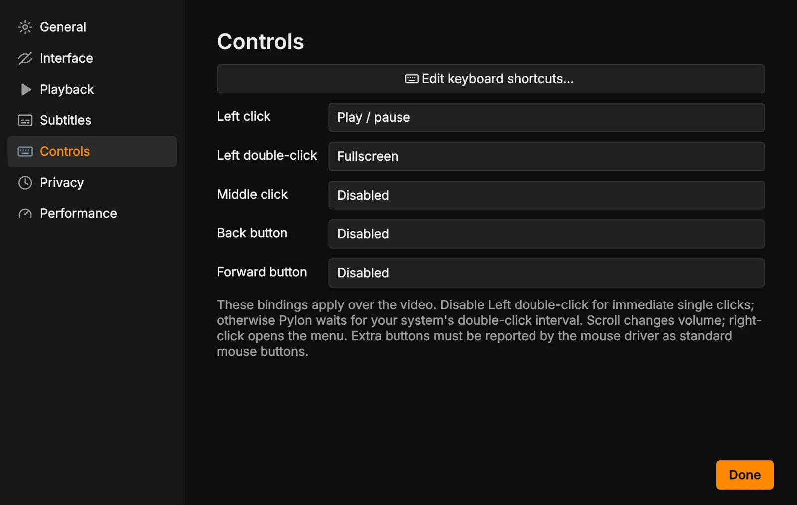
Choose what left click, left double-click, middle click and the mouse's back and forward buttons do over the video. Turn off double-click for instant single clicks. Edit keyboard shortcuts… opens the shortcut list.
Privacy
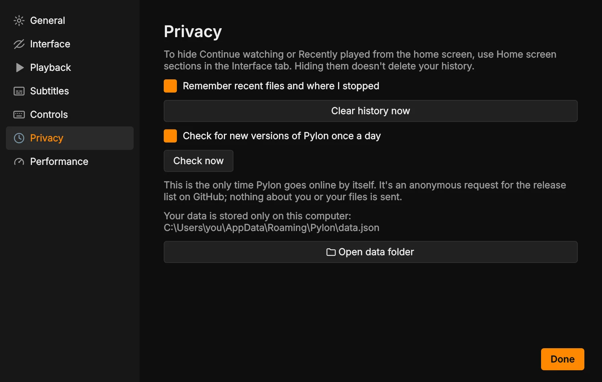
Turn history and resume points on or off, clear your history, and choose whether Pylon checks for new versions once a day. Open data folder shows where your library, history and settings are kept.
Performance
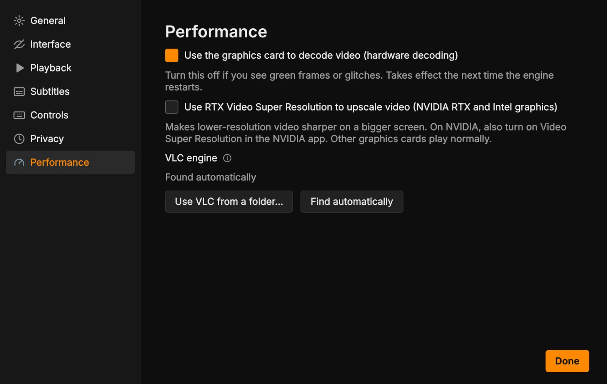
- Hardware decoding uses the graphics card. Turn it off if you see green frames or glitches.
- RTX Video Super Resolution (Windows, NVIDIA RTX and Intel graphics) makes lower-resolution video sharper on a big screen. On NVIDIA, also turn on Video Super Resolution in the NVIDIA app.
- VLC engine: use a VLC from a specific folder, such as a portable VLC, or let Pylon find it.
Keyboard shortcuts
Press F1 to see every shortcut. To change one, click its key, then press the new key. Esc inside the box clears it, and Reset to defaults puts them all back. If another action already has that key, Pylon says which one: Use it here moves the key, and Undo puts yours back.
Playing
| Play / pause | Space |
| Stop | S |
| Jump forward 10s | → |
| Jump back 10s | ← |
| Jump forward 1 min | Ctrl+→ |
| Jump back 1 min | Ctrl+← |
| Next frame | E |
| Next in queue | N |
| Previous in queue | P |
| Faster | ] |
| Slower | [ |
| Normal speed | = |
Sound, subtitles and picture
| Volume up | ↑ |
| Volume down | ↓ |
| Mute | M |
| Subtitles later (+50 ms) | J |
| Subtitles earlier (-50 ms) | G |
| Audio later (+50 ms) | K |
| Audio earlier (-50 ms) | Shift+K |
| Next subtitle track | V |
| Next audio track | B |
| Next aspect ratio | A |
| Next crop | C |
Window and panels
| Fullscreen | F |
| Fullscreen (second key) | Enter |
| Leave fullscreen | Esc |
| Picture in picture | Ctrl+P |
| Hide the interface | H |
| Show or hide library panel | Ctrl+L |
| Show or hide settings panel | Ctrl+T |
| Show queue | Ctrl+Q |
| Show or hide both side panels | Ctrl+Shift+L |
| Zoom in | Ctrl+= |
| Zoom out | Ctrl+- |
| Reset zoom | Ctrl+0 |
Files and other
| Open file | Ctrl+O |
| Open folder | Ctrl+F |
| Open network stream | Ctrl+N |
| Add bookmark | Ctrl+B |
| Take a snapshot | Shift+S |
| Show keyboard shortcuts | F1 |
| Open Preferences | Ctrl+, |
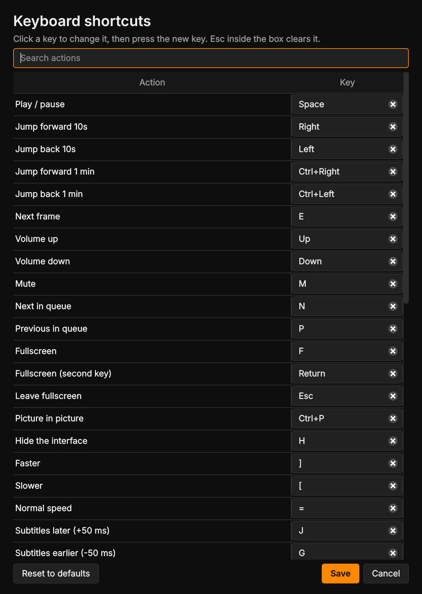
How to…
Watch a series and always pick up where you left off
- Add the series folder to your library with Add folder to library on the home screen.
- Play the first episode. The rest of the folder goes into the queue, and each episode plays after the last.
- Next time, click the show under Continue watching on the home screen, or click Continue from next to the play controls.
Fix subtitles that are early or late
- Open the settings panel (Ctrl+T) on the Subtitles tab.
- Pause just as someone starts speaking.
- Drag the timeline until their line sits under the white playhead, or press G or J.
- Save a preset so every episode of the show uses the same timing.
Make every episode of a show look and sound the same
- Set the subtitle look and timing, audio and subtitle language, speed and picture for one episode.
- In the settings panel, click the save button next to Preset and name it.
- Every file in that folder now uses the preset automatically.
Watch an IPTV channel list
- To keep it: open the library's Streams tab and click Import list…, or drop the
.m3ufile onto the list. - For a list online, click Open a stream…, paste the link and tick Save it to Streams in the library. Its channel count appears once it has been opened.
- Double-click the list to load the channels into the queue, then type in the queue's search box to find a channel.
- Right-click your favourite channels' lists and choose Pin to top.
Make quiet audio louder
- Open Preferences > Playback and set Maximum volume to 150% or 200%.
- Drag the volume, scroll over the video or press Up to go past 100%.
Fall asleep to a film
- Open the settings panel on the Playback tab.
- Under Sleep timer, choose a time, or End of file.
Watch in a small window while you work
- Press Ctrl+P.
- Drag the window anywhere and resize it from its edges. It stays on top of other apps.
- Press Esc to go back.
Change the colours
- Open Preferences > General.
- Pick an accent color and a theme. Try a neon theme for glowing highlights.
Your data and updates
Pylon keeps your library, history, resume points, presets, bookmarks and subtitle pairings in one file on your computer: %APPDATA%\Pylon on Windows, ~/.local/share/pylon on Linux and ~/Library/Application Support/Pylon on macOS. Nothing is uploaded.
The only time Pylon goes online by itself is a once-a-day check for new versions: an anonymous request to GitHub for the list of Pylon releases. When there's a new version, Menu > Update to Pylon… appears. On Windows, Update now downloads and runs the installer, keeping your settings; on Linux and macOS it opens the download page. Turn the check off in Preferences > Privacy.
Troubleshooting
Pylon says it can't find VLC
Install VLC 3 (64-bit on Windows). For a portable VLC, click Locate VLC folder… in the message, or use Preferences > Performance > Use VLC from a folder…. On Linux, use VLC from your distribution, not the Flatpak or Snap version.
Green frames, glitches or a black picture
Turn off hardware decoding in Preferences > Performance. If you use RTX Video Super Resolution and the picture goes black after opening a panel, turn that option off and tell us on GitHub.
No sound, or Pylon closes at start on Linux
Pylon uses VLC's PulseAudio output, which PipeWire also serves. To try another output, start Pylon with PYLON_VLC_ARGS=--aout=pipewire (or alsa).
Subtitles aren't found automatically
Put them next to the video, or in a Subs or Subtitles folder, with the same name or episode number. Or use Add subtitles… and fix the pairing by hand. Preferences > Subtitles sets how closely names must match.
The subtitle look or rotation restarted the video
That's expected: VLC reads those settings when its engine starts, so Pylon restarts the video at the same spot.
Reporting a problem
Open an issue on GitHub with what you did and what happened. Attach Pylon's error.log and vlc.log from its logs folder (check them first: they contain file names). On Windows, diag.bat in the Pylon folder writes a diagnostic file too.
Nothing in the guide matches that. Try a shorter word, or ask on GitHub.